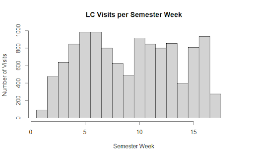

Feature Engineering
The complete feature engineering implementation can be found in our source code.
Temporal Feature Engineering
Our feature engineering process began with temporal data extraction using the lubridate package. The timestamp data provided several readily constructible features:
prepare_dates <- function(df) {
df %>% mutate(
Check_In_Date = mdy(Check_In_Date),
Check_In_Time = hms::as_hms(Check_In_Time)
)
}From these validated timestamps, we construct several temporal features:
add_temporal_features <- function(df) {
df %>% mutate(
Check_In_Day = wday(Check_In_Date, label = TRUE),
Is_Weekend = Check_In_Day %in% c("Sat", "Sun"),
Check_In_Week = ceiling(day(Check_In_Date) / 7),
Check_In_Month = month(Check_In_Date, label = TRUE),
Check_In_Hour = hour(Check_In_Time)
)
}Analysis of visit patterns revealed a non-linear relationship between Check_In_Hour and Duration variables. This observation prompted the creation of a more nuanced Time_Category variable with distinct periods:
add_time_category <- function(df) {
df %>% mutate(
Time_Category = case_when(
hour(Check_In_Time) < 6 ~ "Late Night",
hour(Check_In_Time) < 12 ~ "Morning",
hour(Check_In_Time) < 17 ~ "Afternoon",
hour(Check_In_Time) < 22 ~ "Evening",
TRUE ~ "Late Night"
)
)
}The Expected_Graduation variable presented a dimensionality challenge due to its categorical semester format. We addressed this by converting it to a numeric ‘Months_Until_Graduation’ metric, effectively reducing complexity while maintaining predictive potential.
convert_semester_to_date <- function(semester_str) {
parts <- strsplit(semester_str, " ")[[1]]
year <- parts[length(parts)]
semester <- parts[1]
month <- case_when(
semester == "Fall" ~ "08",
semester == "Spring" ~ "01",
semester == "Summer" ~ "06",
semester == "Winter" ~ "12",
TRUE ~ NA_character_
)
paste0(month, "/", "01", "/", year)
}add_graduation_features <- function(df) {
df %>% mutate(
Months_Until_Graduation = as.numeric(
difftime(Expected_Graduation_Date, Semester_Date, units = "days") / 30.44
)
)
}Student Classification Features
The dataset exhibited an unexpected concentration of ‘Senior’ classifications in our initial analysis. Further investigation revealed this stemmed from students accumulating excess credits for senior status without fulfilling graduation requirements. To address this imbalance while preserving useful information, we implemented a dual classification approach.
add_class_standing_category <- function(df) {
df %>% mutate(
# Renaming column and values for Class_Standing
Class_Standing_Self_Reported = case_when(
Class_Standing == "Freshman" ~ "First Year",
Class_Standing == "Sophomore" ~ "Second Year",
Class_Standing == "Junior" ~ "Third Year",
Class_Standing == "Senior" ~ "Fourth Year",
TRUE ~ Class_Standing
),
)
}The original Class_Standing variable, while potentially containing valuable self-reported insights, required recoding. We preserved this information as Class_Standing_Self_Reported with progression labels from “First Year” through “Fourth Year”, along with “Graduate” and “Other” designations. Complementing this, we developed a more objective BGSU Standing metric based on credit hours. This dual approach preserves potentially valuable self-reported information while introducing a more objective credit-based metric.
add_class_standing_bgsu <- function(df) {
df %>% mutate(
# Class_standing by BGSU's definition
# https://www.bgsu.edu/academic-advising/student-resources/academic-standing.html
Class_Standing_BGSU = case_when(
Total_Credit_Hours_Earned < 30 ~ "Freshman",
Total_Credit_Hours_Earned < 60 ~ "Sophomore",
Total_Credit_Hours_Earned < 90 ~ "Junior",
Total_Credit_Hours_Earned <= 120 ~ "Senior",
TRUE ~ "Extended"
),
)
}Course Name and Type Features
The Course_Name variable presented immediate challenges for model fitting in its raw form. While various approaches existed for handling this high-cardinality variable, we opted for a flexible keyword-based system. This approach identifies key terms within course names - for instance, classifying courses containing ‘Culture’, ‘Language’, or ‘Ethics’ under ‘Humanities’. Though this resulted in 14 distinct categories, it provides flexibility for subsequent modeling decisions through regularization or variable selection.
add_course_name_category <- function(df) {
df %>% mutate(
Course_Name_Category = case_when(
# Introductory level courses
grepl("Algebra|Basic|Elementary|Intro|Introduction|Fundamental|General|Principles|Orientation",
Course_Name, ignore.case = TRUE) ~ "Introductory",
# Intermediate level courses
grepl("Intermediate|II$|II |2|Applied",
Course_Name, ignore.case = TRUE) ~ "Intermediate",
# Advanced level courses
grepl("Advanced|III|3|Analysis|Senior|Graduate|Dissertation|Research|Capstone", Course_Name, ignore.case = TRUE) ~ "Advanced",
# Business related courses
grepl("Business|Finance|Accounting|Economics|Marketing|Management",
Course_Name, ignore.case = TRUE) ~ "Business",
# Laboratory/Practical courses
grepl("Laboratory|Lab", Course_Name, ignore.case = TRUE) ~ "Laboratory",
# Seminar/Workshop courses
grepl("Seminar|Workshop", Course_Name, ignore.case = TRUE) ~ "Seminar",
# Independent/Special courses
grepl("Independent|Special", Course_Name, ignore.case = TRUE) ~ "Independent Study",
# Mathematics and Statistics
grepl("Mathematics|Calculus|Statistics|Probability|Geometry|Discrete",
Course_Name, ignore.case = TRUE) ~ "Mathematics",
# Computer Science
grepl("Computer|Programming|Data|Software|Network|Database|Algorithm",
Course_Name, ignore.case = TRUE) ~ "Computer Science",
# Natural Sciences
grepl("Physics|Chemistry|Biology|Astronomy|Earth|Environment|Science",
Course_Name, ignore.case = TRUE) ~ "Natural Sciences",
# Social Sciences
grepl("Psychology|Sociology|Anthropology|Social|Cultural|Society",
Course_Name, ignore.case = TRUE) ~ "Social Sciences",
# Humanities
grepl("History|Philosophy|Ethics|Literature|Culture|Language|Art",
Course_Name, ignore.case = TRUE) ~ "Humanities",
# Education/Teaching
grepl("Education|Teaching|Learning|Childhood|Teacher|Curriculum",
Course_Name, ignore.case = TRUE) ~ "Education",
# Default case
TRUE ~ "Other"
)
)
}Similarly, the Course_Type variable required substantial level reduction. We consolidated the original categories into natural academic groupings such as ‘business courses’, ‘education courses’, and ‘STEM courses’. For visits lacking course specifications, we designated a “No Response” category rather than discarding these observations.
add_course_type_category <- function(df) {
df %>% mutate(
Course_Type_Category = case_when(
# STEM Fields
Course_Type %in% c("MATH", "STAT", "CS", "ASTR","PHYS", "BIOL", "CHEM", "GEOL", "ECET") ~ "STEM Core",
# Engineering and Technology
Course_Type %in% c("ENGT", "CONS", "ARCH", "MIS", "TECH") ~ "Engineering & Technology",
# Business and Economics
Course_Type %in% c("FIN", "ACCT", "ECON", "BA", "MGMT", "MKT", "MBA", "BIZX", "LEGS", "OR") ~ "Business",
# Social Sciences
Course_Type %in% c("SOC", "PSYC", "POLS", "CRJU", "HDFS", "SOWK", "GERO") ~ "Social Sciences",
# Natural and Health Sciences
Course_Type %in% c("NURS", "MLS", "EXSC", "FN", "AHTH", "DHS") ~ "Health Sciences",
# Humanities and Languages
Course_Type %in% c("HIST", "PHIL", "ENG", "GSW", "FREN", "GERM", "SPAN", "LAT", "RUSN", "ITAL", "CLCV") ~ "Humanities",
# Arts and Performance
Course_Type %in% c("ART", "ID", "MUCT", "MUS", "THFM", "POPC") ~ "Arts",
# Education and Teaching
Course_Type %in% c("EDTL", "EDFI", "EDIS", "EIEC") ~ "Education",
# Environmental Studies
Course_Type %in% c("ENVS", "GEOG", "SEES") ~ "Environmental Studies",
# Special Programs
Course_Type %in% c("HNRS", "UNIV", "ORGD", "RESC") ~ "Special Programs",
# Physical Education
Course_Type %in% c("PEG", "SM", "HMSL") ~ "Physical Education",
# Cultural Studies
Course_Type %in% c("ETHN", "COMM", "CDIS") ~ "Cultural & Communication Studies",
# No Response/Unknown
Course_Type %in% c("No Response", NA) ~ "No Response",
# Default case
TRUE ~ "Other"
)
)
}For visits without a specified course association, we introduced a “No Response” category to maintain data completeness.
Major Categories
The Major variable demanded a similar keyword-based reduction strategy as Course_Name. Through analysis of major descriptions, we identified recurring terms that allowed for logical grouping. For example, the ‘Mathematics’ category encompasses mathematics, statistics, and actuarial science majors. Our final categorization includes:
add_major_category <- function(df) {
df %>% mutate(
Major_Category = case_when(
# Business and Management
grepl("MBA|BSBA|Business|Marketing|Finance|Account|Economics|Management|Supply Chain|Analytics",
Major, ignore.case = TRUE) ~ "Business",
# Computer Science and Technology
grepl("Computer|Software|Data|Information Systems|Technology|Engineering|Electronics",
Major, ignore.case = TRUE) ~ "Computing & Technology",
# Natural Sciences
grepl("Biology|Chemistry|Physics|Science|Environmental|Geology|Forensic|Neuroscience",
Major, ignore.case = TRUE) ~ "Natural Sciences",
# Health Sciences
grepl("Nursing|Health|Medical|Nutrition|Dietetics|Physical Therapy|Physician|Laboratory",
Major, ignore.case = TRUE) ~ "Health Sciences",
# Social Sciences
grepl("Psychology|Sociology|Criminal Justice|Political|Economics|Social Work|Anthropology",
Major, ignore.case = TRUE) ~ "Social Sciences",
# Education
grepl("Education|Teaching|Early Childhood|BSED|Intervention Specialist",
Major, ignore.case = TRUE) ~ "Education",
# Arts and Humanities
grepl("Art|Music|Philosophy|History|English|Language|Communication|Media|Journalism|Film|Theatre",
Major, ignore.case = TRUE) ~ "Arts & Humanities",
# Mathematics and Statistics
grepl("Math|Statistics|Actuarial",
Major, ignore.case = TRUE) ~ "Mathematics",
# Pre-Professional Programs
grepl("Pre-|PRELAW|PREMED|PREVET",
Major, ignore.case = TRUE) ~ "Pre-Professional",
# Undecided/General Studies
grepl("Undecided|Liberal Studies|General|Deciding|UND|Individual|BLS",
Major, ignore.case = TRUE) ~ "General Studies",
# Special Programs
grepl("Minor|Certificate|GCERT|Non-Degree",
Major, ignore.case = TRUE) ~ "Special Programs",
# No Response/Unknown
grepl("No Response|NA", Major, ignore.case = TRUE) ~ "No Response",
# Default case
TRUE ~ "Other"
),
# Add a flag for double majors
Has_Multiple_Majors = grepl(",", Major)
)
}We maintained an ‘Other’ category for majors that defied clear classification. The data structure also revealed an opportunity to identify students pursuing multiple degrees - we created this indicator by detecting comma-separated entries in the Major field.
Visit Pattern Features
Student_ID analysis enabled the construction of several usage metrics. Beyond simple visit counts, we examined temporal patterns at multiple scales:
add_visit_features <- function(df) {
df %>%
group_by(Student_IDs) %>%
mutate(
# Count visits per student
Total_Visits = n(),
# Count visits per student per semester
Semester_Visits = n_distinct(Check_In_Date),
# Average visits per week
Avg_Weekly_Visits = Semester_Visits / max(Semester_Week)
) %>%
ungroup()
}add_week_volume_category <- function(df) {
df %>%
mutate(
Week_Volume = case_when(
Semester_Week %in% c(4:8, 10:13, 15:16) ~ "High Volume",
Semester_Week %in% c(1:3, 9, 14, 17) ~ "Low Volume",
TRUE ~ "Other"
)
)
}Examination of visit frequency throughout the semester revealed clear patterns. Weeks 1-3, 9, 14, and 17 consistently showed lower activity levels, while the remaining weeks demonstrated higher traffic. This distinction proved valuable, as visit volume may influence individual visit duration. We encoded this insight through a binary ‘Volume’ indicator for each week.

Course Load and Performance Features
For each student-semester combination, we developed metrics to capture academic context. We tracked the number of unique courses and examined the distribution of course levels based on the Course_Code_by_Thousands variable. Particular attention was paid to upper-division coursework, creating a specific metric for the proportion of ‘4000-level courses’. Additionally, we implemented a GPA trend indicator that focuses on directional changes rather than absolute values, recognizing that the direction of GPA movement might be more informative than the magnitude.
add_course_load_features <- function(df) {
df %>%
group_by(Student_IDs, Semester) %>%
mutate(
# Number of unique courses
Unique_Courses = n_distinct(Course_Number),
# Mix of course levels
Course_Level_Mix = n_distinct(Course_Code_by_Thousands),
# Proportion of advanced courses
Advanced_Course_Ratio = mean(Course_Level == "Upper Classmen", na.rm = TRUE)
) %>%
ungroup()
}add_gpa_trend <- function(df) {
df %>% mutate(
# Calculate GPA trend (1 for positive, -1 for negative, 0 for no change)
GPA_Trend = sign(Change_in_GPA),
)
}Group Dynamics
A final analytical step involved identifying group study patterns. By examining clusters of Check_In_Time, we detected multiple students arriving within the same minute - a strong indicator of group visits. This observation led to three complementary features: Group_Size, Group_Check_In, and Group_Size_Category.
add_group_features <- function(df) {
df %>%
mutate(
Check_In_Timestamp = ymd_hms(paste(Check_In_Date, Check_In_Time))
) %>%
add_count(Check_In_Timestamp, name = "Group_Size") %>%
mutate(
Group_Check_In = Group_Size > 1,
Group_Size_Category = case_when(
Group_Size == 1 ~ "Individual",
Group_Size <= 3 ~ "Small Group",
Group_Size <= 6 ~ "Medium Group",
TRUE ~ "Large Group"
)
) %>%
select(-Check_In_Timestamp)
}While some simultaneous check-ins might be coincidental, this classification captures potential social patterns in Learning Commons usage, particularly among friend groups.
Data Quality of Duration and Occupancy
Last, our preprocessing included essential validation steps. We verified Duration_In_Min calculations through comparison of check-in and check-out times, ensuring no negative values existed in the data. The Occupancy variable was calculated and received similar scrutiny during its construction.
ensure_duration <- function(df) {
# Calculate duration in minutes
df %>%
mutate(
Duration_In_Min = as.numeric(difftime(
Check_Out_Time,
Check_In_Time,
units = "mins"
)),
# Filter out negative durations
Duration_In_Min = if_else(Duration_In_Min < 0, NA_real_, Duration_In_Min),
) %>%
filter(!is.na(Duration_In_Min))
}calculate_occupancy <- function(df) {
df %>%
arrange(Check_In_Date, Check_In_Time) %>%
group_by(Check_In_Date) %>%
mutate(
Cum_Arrivals = row_number(),
Cum_Departures = sapply(seq_along(Check_In_Time), function(i) {
sum(!is.na(Check_Out_Time[1:i]) &
Check_Out_Time[1:i] <= Check_In_Time[i])
}),
Occupancy = Cum_Arrivals - Cum_Departures
) %>%
select(-c(Cum_Arrivals, Cum_Departures))
}Conclusion
Our feature engineering process addressed several key challenges in the Learning Commons dataset through systematic transformation and enrichment of the raw data. The temporal features capture both cyclical patterns and academic calendar effects, while our treatment of course-related variables reduces dimensionality while preserving meaningful distinctions. The dual approach to student classification acknowledges both institutional definitions and self-reported status, providing complementary perspectives on academic progression.
The keyword-based categorization systems for Course_Name, Course_Type, and Major strike a balance between granularity and model practicality. While some nuance is inevitably lost in such consolidation, the resulting features maintain interpretability while reducing sparsity. The visit pattern features capture both individual usage trends and broader facility utilization patterns, providing context for duration prediction.
Our treatment of group dynamics represents a novel approach to capturing social patterns in academic space utilization. While the simultaneous check-in heuristic may occasionally misclassify coincidental arrivals, it provides valuable insight into collaborative learning patterns that might influence visit duration.
The extensive validation steps for Duration_In_Min and Occupancy calculations ensure data quality while acknowledging practical limitations. These features form a robust foundation for subsequent modeling efforts, though opportunities exist for further refinement through domain expert consultation and iterative testing.